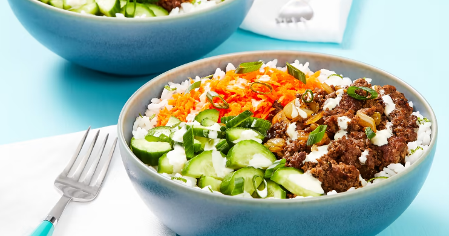

SWEET PONZU BEEF BOWL

oooooh Asian cuisine my bubu loves
ingredients
- 1 unit ground beef
- 1 medium yellow onion chopped
- carrot
- garlic minced
- persian cucumber sliced
- scallions
- lime
- ponzu sauce
- mayonnaise my bubu's favorite
- wasabi optional
- white rice
steps
- Place rice in a fine-mesh sieve and rinse until
water runs clear. Add to a small pot with 1 cup
water (2 cups for 4 servings) and a pinch of
salt. Bring to a boil, then cover and reduce
to a low simmer. Cook until rice is tender, 15
minutes. Keep covered off heat for at least 10
minutes or until ready to serve.
- Meanwhile, wash and dry all produce. Peel
and finely chop garlic. Zest and quarter lime
(for 4 servings, zest 1 lime and quarter both).
Trim and halve cucumber lengthwise; thinly
slice crosswise into half-moons. Halve, peel,
and dice onion. Trim, peel, and grate carrot.
Trim and thinly slice scallions, separating
whites from greens.
- In a medium bowl, combine cucumber, juice
from half the lime, ¼ tsp sugar (½ tsp for
4 servings), and a pinch of salt. Set aside
to quick-pickle, stirring occasionally, until
ready to serve. In a small bowl, combine
mayonnaise, a pinch of garlic, a squeeze of
lime juice, and as much wasabi as you’d like
(start with a little, then taste and add more
from there if desired). Season with salt and
pepper.
- Once rice has cooked 15 minutes, heat a
drizzle of oil in a large pan over medium-high
heat. Add onion and scallion whites; cook,
stirring, until softened, 4-5 minutes. Add
beef, remaining garlic, and 2 tsp sugar (4
tsp for 4 servings). Cook, breaking up meat
into pieces, until beef is browned and cooked
through, 4-5 minutes. Stir in ponzu. Turn off
heat; taste and season with salt and pepper.
- Fluff rice with a fork and stir in lime zest
and 1 TBSP butter; season with salt. Divide
between bowls. Arrange beef, grated carrot,
and pickled cucumber (draining first) on top.
Top with scallion greens and a squeeze of
lime juice. Drizzle with wasabi mayo.